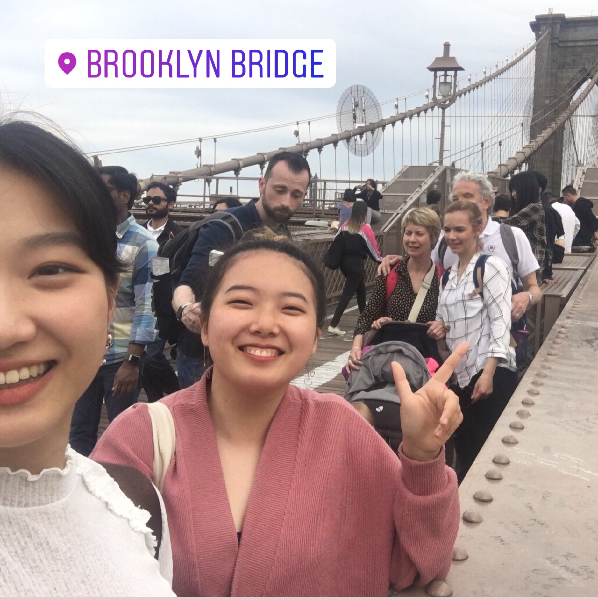

BLOSSOM. April 7, 2019.


I realize this is the first time in 10 years I’m seeing these flowers. And I used to live 5 minutes away from the site of an annual cherry blossom festival…
Its been a long time since I experienced the gradual change from winter to spring. All I’ve been remembering is the plunge into the dead of winter or summer beyond airport doors. I’ve forgotten how happy spring flowers make me feel; or am I just appreciating them more so now because I can finally shed the thick layers?
Its been a long time since I experienced the gradual change from winter to spring. All I’ve been remembering is the plunge into the dead of winter or summer beyond airport doors. I’ve forgotten how happy spring flowers make me feel; or am I just appreciating them more so now because I can finally shed the thick layers?
STUCK IN OWN WORLD. April 8, 2019.
During the few seconds it took to adjust to the bright hubbub of tourists and taxis outside the exhibition, I felt like I was floating in a horribly dystopic dream. Inside or out, I don't know.
You are your own worst enemy — ever heard of this saying? It’s not true. The world is much crueler than you.
You are your own worst enemy — ever heard of this saying? It’s not true. The world is much crueler than you.
EXPLOSION. April 9, 2019.

I’ll disappear after a few days. (Or immediately if you have the right concealer).
MILK AND CREAM. April 10, 2019.

Guilty pleasures are hard to digest
AVOCAHOE. April 11, 2019.
This avocado was so unblemished I was prepared to make it a sacrificial offering to the God(s)(?) to survive this week
HEARTSTRINGS. April 12, 2019.
When I heard I laughed and said how random
Thanks for telling me, keep in touch, goodbye
No more updates please
Not on that
No more, no
More
More
And time was at a standstill
As my head fell to my knees
Evening dark already dawning
When here I still am
Clutching at a phone
still connected by a million threads
To the memory of a home
A thousand miles away
Thanks for telling me, keep in touch, goodbye
No more updates please
Not on that
No more, no
More
More
And time was at a standstill
As my head fell to my knees
Evening dark already dawning
When here I still am
Clutching at a phone
still connected by a million threads
To the memory of a home
A thousand miles away
NYC CROWD. April 13, 2019.

Happy to finally meet my good friend and visit MoMA in NYC.
MONI'S WORLD: VOLUME 22, ISSUE APRIL.
The date is 14 April, 2019.
I am a half-month into April, one week into this project, and zero days sure of what story it’s going to end with by the 30th. Or start to tell. Or continue.
Nevertheless, here’s the idea: I’ll hit the restart button every morning and see where I go, and every night I’ll sit down for a quick drawing. For me, it’s a form of reflection or introspection, building mindfulness, and a creative daily outlet. For you, my guest, it’s a window into my day and perhaps my somewhat wacky inner workings.
This is my April room of windows. Two views for each. One from my phone, and one from me; one that looks out, and one that, in varying levels, looks in.
I am a half-month into April, one week into this project, and zero days sure of what story it’s going to end with by the 30th. Or start to tell. Or continue.
Nevertheless, here’s the idea: I’ll hit the restart button every morning and see where I go, and every night I’ll sit down for a quick drawing. For me, it’s a form of reflection or introspection, building mindfulness, and a creative daily outlet. For you, my guest, it’s a window into my day and perhaps my somewhat wacky inner workings.
This is my April room of windows. Two views for each. One from my phone, and one from me; one that looks out, and one that, in varying levels, looks in.
LOA. April 15, 2019.


Taking the plunge. 1 year is short in the grand scheme of things but it also feels terrifyingly long. Also, I'll miss my parents.
RED. April 16, 2019.
when I absentmindedly draw myself it never looks like me. Today I have long white hair, the literal opposite of this short black bob I’m desperately trying to grow out.
NOODLES. April 17, 2019.
poodles of oodles of noodles
HOME. April 18, 2019.

HOW ARE YOU? SUNNIE. April 19, 2019.
Today, I step out of Moni’s World and try to see the world from the POV of a black woman in America.
This country and its politics feel so foreign to me — things I’ve only seen on screen in Singapore and shook my head at. The anger and tears I saw at the protest were very real. Today, both my windows look outwards. Because I can’t begin to understand what it’s like to be black in America, what it’s like to be shot for sitting unarmed in a car at night, or what it’s like to see a police officer and feel fear instead of safety.
This country and its politics feel so foreign to me — things I’ve only seen on screen in Singapore and shook my head at. The anger and tears I saw at the protest were very real. Today, both my windows look outwards. Because I can’t begin to understand what it’s like to be black in America, what it’s like to be shot for sitting unarmed in a car at night, or what it’s like to see a police officer and feel fear instead of safety.
HOW ARE YOU? VICKY. April 20, 2019.
A pause button for Vicky, because it's true endings come too fast.
POTATO. April 21, 2019.
Do you ever feel
like a rotting squirrel
drifting through the nights
wanting to start again
like a rotting squirrel
drifting through the nights
wanting to start again